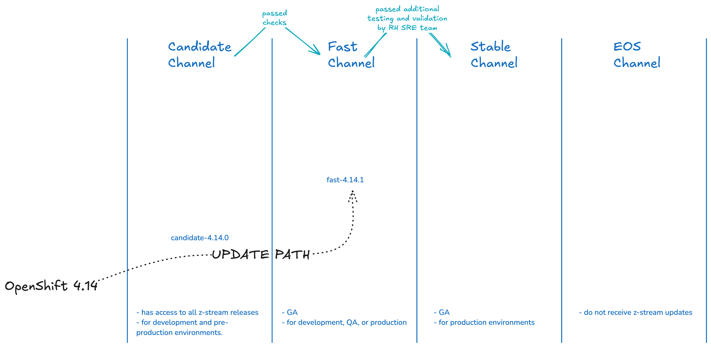
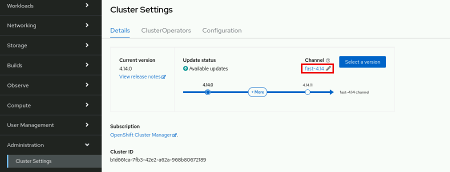
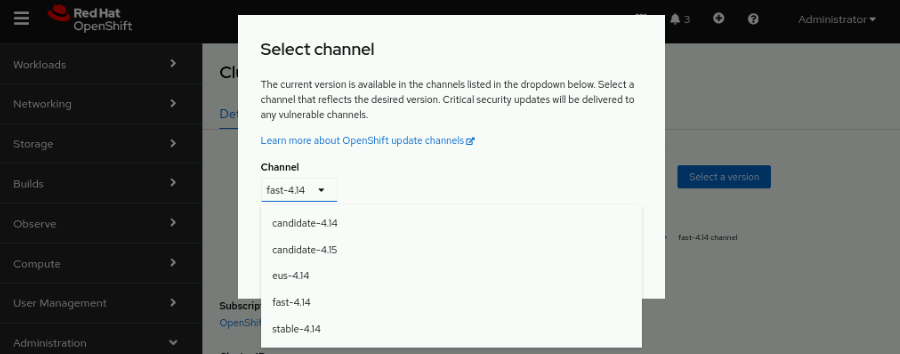
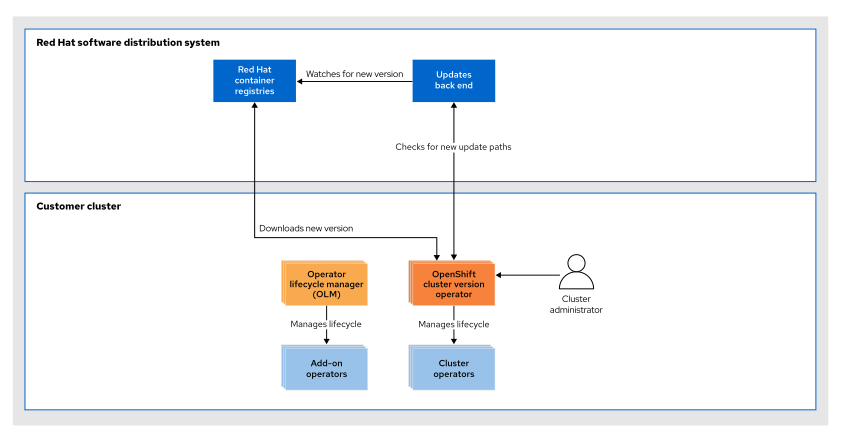
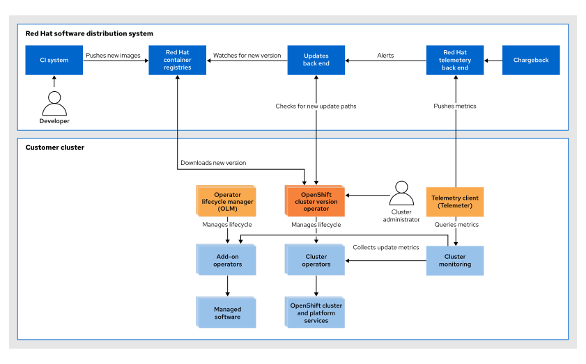
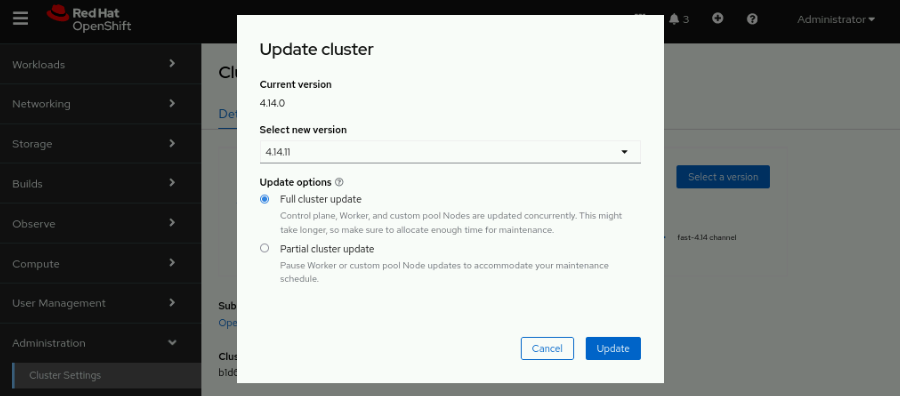
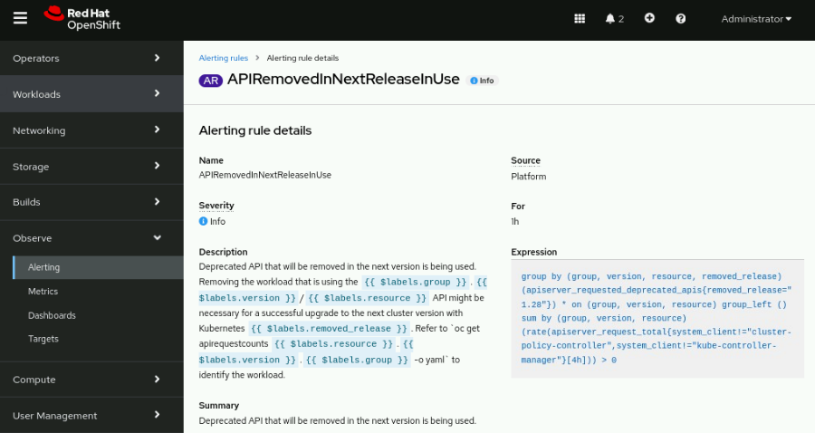
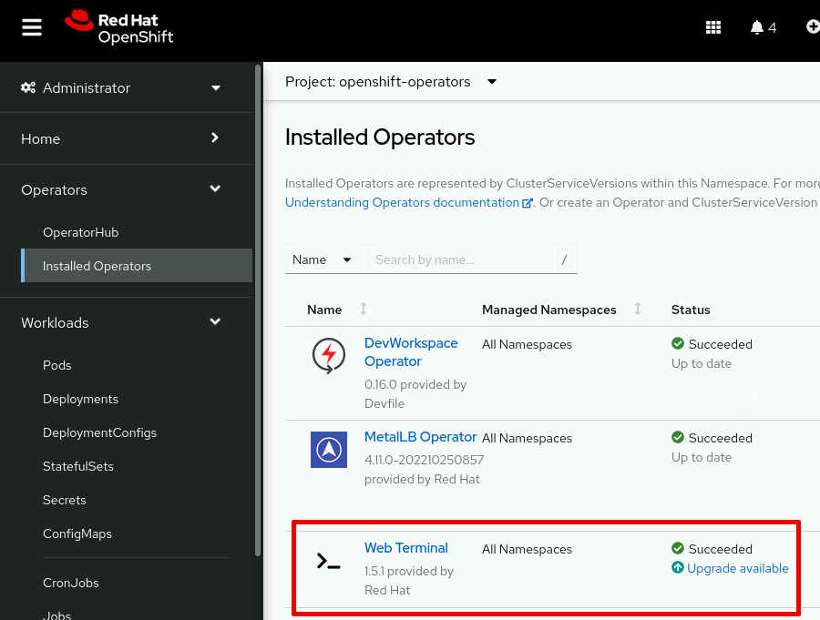
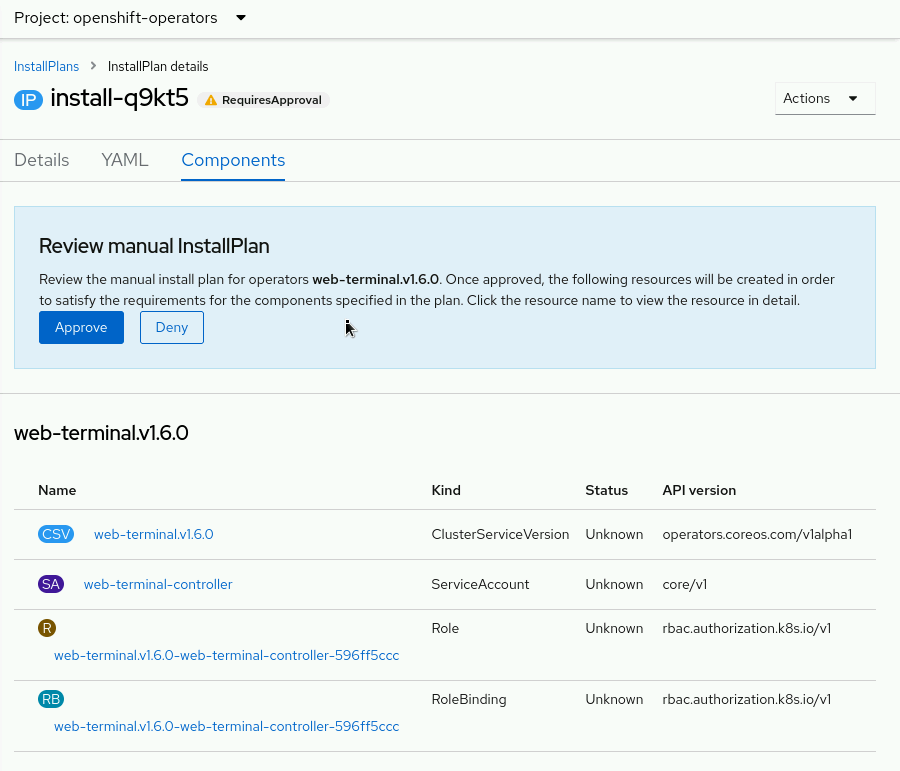

9. Openshift Updates
1. The Cluster Update Process¶
With the new distribution system Red Hat Enterprise Linux CoreOS, oc cluster can perform Over-the-Air updates (OTA).
OTA:
- decreases downtime due to upgrades
- cluster can use new features and the newest bug fixes
- faster update by skipping intermediate versions.
4.14.1->4.14.3
Warning
Starting with OpenShift 4.10, the OTA system requires a persistent connection to the internet.
Concepts¶
Upgrade Path describes how a cluster upgrades its version, depends on which channel the cluster has, the upgrading behavior differs.

Channel¶
Channel is the representation of the upgrade path. The channel controls the frequency and stability of updates.
channel name
- the tier (
candidate,fast,stable, andeus- extended update support) - the major version (
-4) - the minor version (
.12)
Examples: candidate-4.14, fast-4.14, stable-4.14, and eus-4.14
版本号
版本号格式：
- Major version (x)：主版本号，例如 4。
- Minor version (y)：次版本号，例如 14。
- Patch version (z)：补丁版本号，例如 1、2、3 等。
z-stream updates
z-stream updates 是指小版本更新或补丁更新，通常用于修复漏洞、安全补丁、稳定性增强和其他小改进。这种更新只涉及软件版本号中的最后一位（即 z 位）。例如，从版本 4.14.0 更新到 4.14.1 或 4.14.2，这些都属于 z-stream updates。
Candidate Channel¶
The candidate channel delivers updates for testing feature acceptance
Fast Channel¶
The fast channel delivers updates as soon as Red Hat declares the given version as a general availability release (GA版本)
Note
If you join the Red Hat connected customers program, then your cluster is registered to the fast channel.
Stable Channel¶
After Fast channel version passes additional testing and validation given by the Redhat site reliability engineering (SRE) teams, it comes into Stable Channel. It is best suited to production environments.
EUS(extended update support) Channel¶
Starting with OpenShift Container Platform 4.8, Red Hat denotes all even-numbered minor releases (for example, 4.8, 4.12, and 4.14) as Extended Update Support (EUS) releases.
Warning
在 OCP 进入 EUS 阶段之前，stable-4.8 和 eus-4.8这两个通道的更新内容一致。一旦进入 EUS 阶段，eus-4.8 通道将开始接收长期支持的更新，而 stable-4.8 通道可能继续提供常规的更新和改进。
Upgrade Paths¶
举例：假设版本4.14.3有问题，我们来看下在不同 channel 的cluster会如何进行upgrade：
- 当前版本是
stable-4.14，我可以从4.14.0升级到4.14.1或者4.14.2，跳过4.14.3，直接升级到4.14.4 - 当前版本是
fast-4.14，can deliver 4.14.1 and 4.14.2 updates but not 4.14.3. - 当前版本是
candidate-4.14，我有权限访问所有的z-stream releases, 比如 as 4.14.1, 4.14.2, and 4.14.3. - When switching to the
eus-4.14channel, thestable-4.14channel does not receive z-stream updates until the next EUS version becomes available.
Switch Channel¶
You can switch channel to eus-4.14, stable-4.14, fast-4.14, or candidate-4.14 by using the web console or the OpenShift CLI client:
Web console:
 
Command line:
oc patch clusterversion version --type="merge" \
--patch '{"spec":{"channel":"fast-4.14"}}'
Pause Health Check¶
During the upgrade process, nodes in the cluster might become temporarily unavailable. In the case of worker nodes, the machine health check might identify such nodes as unhealthy and reboot them. To avoid rebooting such nodes, pause all the machine health check resources before updating the cluster.
-
list all the available machine health check resources
[user@host ~]$ oc get machinehealthcheck -n openshift-machine-api NAME MAXUNHEALTHY EXPECTEDMACHINES CURRENTHEALTHY machine-api-termination-handler 100% -
pause the Health Check with the annotation
oc annotate machinehealthcheck -n openshift-machine-api \ machine-api-termination-handler cluster.x-k8s.io/paused="" -
remove the annotation after the cluster is updated.
oc annotate machinehealthcheck -n openshift-machine-api \ machine-api-termination-handler cluster.x-k8s.io/paused-
OTA¶
OTA generates all possible update paths for your cluster.
The following diagram describes the updates architecture: Red Hat hosts both the cluster images and a "watcher", which automatically detects new images that are pushed to Quay. The Cluster Version Operator (CVO) receives its update status from that watcher. The CVO starts by updating the cluster components via their operators, and then updates any extra components that the Operator Lifecycle Manager (OLM) manages.

With telemetry, Red Hat can determine the update path. The cluster uses a Prometheus-based Telemeter component to report on the state of each cluster operator. The data is anonymized and sent back to Red Hat servers that advise cluster administrators about potential new releases.
In the future, Red Hat intends to extend the list of updated operators that are included in the upgrade path to include independent software vendor (ISV) operators.

Update¶
update related components
Machine Config Operator
The Machine Config Operator applies the desired machine state to each of the nodes. This component also handles the rolling upgrade of nodes in the cluster, and uses CoreOS Ignition as the configuration format.
Operator Lifecycle Manager
The OLM orchestrates updates to any operators that are running in the cluster.
Web Console:

CLI:
# get version info
oc get clusterversion
# get version + channel
oc get clusterversion -o jsonpath='{.items[0].spec.channel}{"\n"}'
# View the available updates
oc adm upgrade
# Apply the latest update
oc adm upgrade --to-latest=true
# Applz update with version=VERSION
oc adm upgrade --to=VERSION
# review the status of the Cluster Version Operator (CVO) and the installed cluster operators.
oc get clusterversion
oc get clusteroperators
oc describe clusterversion
2. Deprecated k8s API¶
Note
The OpenShift Container Platform foundation is based on Kubernetes and therefore shares the underlying technology.
The following table lists the OpenShift version and the Kubernetes version that it is based on:
⚠️ 记忆点：mayor差+3，minor差-13
| OpenShift version | Kubernetes version |
|---|---|
| 4.12 | 1.25 |
| 4.13 | 1.26 |
| 4.14 | 1.27 |
K8s API¶
Kubernetes API versions are categorized based on feature maturity:
| API version | Category | Description |
|---|---|---|
v1alpha1 |
Alpha | Experimental features |
v1beta1 |
Beta | Pre-release features |
v1 |
Stable | Stable features, generally available |
Get the current version of the resource cronjobs:
oc api-resources | egrep '^NAME|cronjobs'
Warning
When a stable version of a feature is released, the beta versions are marked as deprecated and are removed after three Kubernetes releases.
List all deprecated k8s APIs, and in which k8s verstion are they deprecated:
[user@host ~]$ oc get apirequestcounts | awk '{if(NF==4){print $0}}'
NAME REMOVEDINRELEASE REQUESTSINCURRENTHOUR REQUESTSINLAST24H
cronjobs.v1beta1.batch 1.25 15 44
To count the used request count:
FILTER='{range .items[?(@.status.removedInRelease!="")]}{.status.removedInRelease}{"\t"}{.status.requestCount}{"\t"}{.metadata.name}{"\n"}{end}'
oc get apirequestcounts -o jsonpath="${FILTER}" | \
column -t -N "RemovedInRelease,RequestCount,Name"
RHOCP¶
Red Hat OpenShift Container Platform (RHOCP) is a set of modular components and services that are built on top of a Kubernetes container infrastructure.
Some deprecated features:
| OpenShift 4.12 | OpenShift 4.13 | OpenShift 4.14 | Feature |
|---|---|---|---|
| General Availability | General Availability | Deprecated | DeploymentConfig objects |
| General Availability | General Availability | Deprecated | Operator lifecycle and development deprecated |
| Deprecated | Deprecated | Deprecated | CoreDNS wildcard queries for the cluster.local domain |
| Deprecated | Deprecated | Deprecated | Persistent storage that uses FlexVolume |
| Not Available | General Availability | Removed | --include-local-oci-catalogs parameter for oc-mirror |
Deprecated API Alerts in OpenShift
OpenShift includes two alerts that are triggered when a workload uses a deprecated API version:
APIRemovedInNextReleaseInUse: This alert is triggered when OC will remove it in the next release.APIRemovedInNextEUSReleaseInUse: This alert is triggered when EUS version will remove it in the next release.

Alternatively you can also extrat alerts in JSON format from Prometheus StatefulSet:
oc exec -it statefulset/prometheus-k8s -c prometheus \
-n openshift-monitoring -- \
curl -fsSL 'http://localhost:9090/api/v1/alerts' | jq . > alerts.json
Explicit Acknowledgment - before updating the cluster
Before upgrading from 4.13 to 4.14, OC requires an administrator to provide a manual acknowledgment - to prevent workloads using deprecated API versions.
3. Update Operators with the OLM¶
The OLM updates the operators. However, new versions can introduce bugs and incompatibilities. Cluster administrators should define operator update policies such as:
1. Automatic and Manual Updates¶
for each installed operator: Manual approval by administrator or Automatic update

You can also get the info by CLI:
# check the sub(subscription) of operator `web-terminal`
oc get sub -n openshift-operators web-terminal -o yaml
currentCSVshows the latest versioninstalledCSVshows the installed version
The OLM also creates an installplan when the operator channel contains a later version of an operator.
# check the installplan "install-72vnw"
oc get installplan -n openshift-operators install-72vnw -o yaml
# approve the installplan & update the operator
oc patch installplan install-72vnw --type merge \
--patch '{"spec":{"approved":true}}'
installplan
An installplan is a custom resource in OpenShift that describes the steps needed to install or upgrade an Operator. It is automatically generated and managed by the OLM when a new Operator or an update to an existing Operator is available.
Example:
apiVersion: operators.coreos.com/v1alpha1
kind: InstallPlan
spec:
approval: Manual # approval needed?
approved: false # is the update approved?
clusterServiceVersionNames:
- web-terminal.v1.6.0 # the updated version
generation: 2
status:
phase: RequiresApproval

automatic VS manual
no matter automatic or manual, the OLM always updates an operator as soon as the configured channel has a later version of the operator.
2. Operator Update Channels¶
Operator providers can create multiple channels for an operator - each channel contains different versions of the operator, e.g.:
- stable channel
- preview channel: to test new features & bugs-fixing
channel
channel可以理解为一个 sub-version，其实和version一样，是一个distribution的版本
You can switch channels in the operator subscription.
3. You can create custom catalogs, and decide which versions of operators to include in the catalog.¶
Gather info¶
Gather cluster info for debugging purpose:
oc adm must-gather